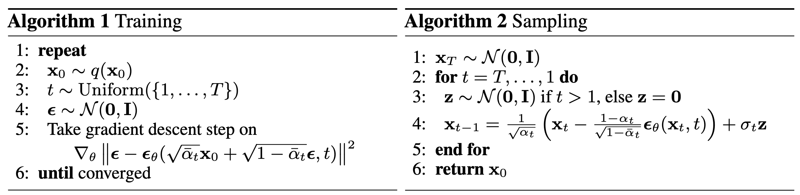
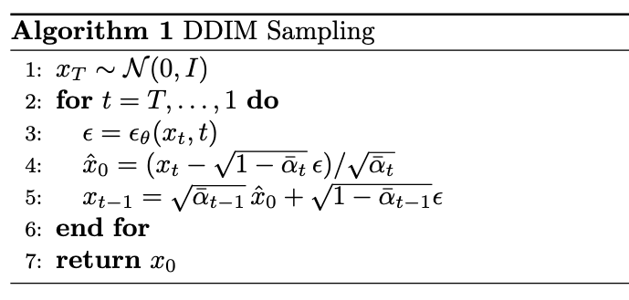
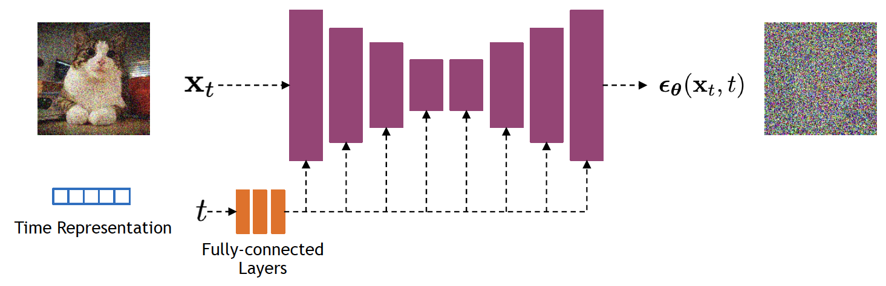
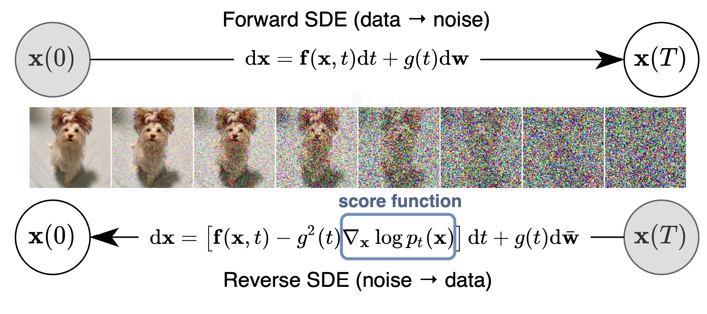
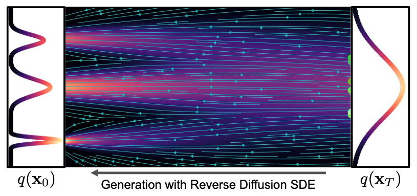
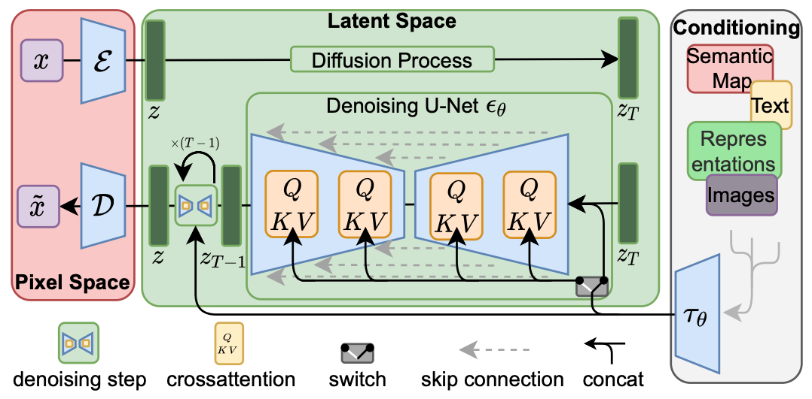

Basics on Diffusion Models
These are my personal notes on diffusion models, created while learning how they work, their derivation, and extensions beyond basic DDPMs. The goal is not just to summarize the material, but to go deeper and build intuition about the design choices behind the training objectives and model architectures. Along the way, I also use simple Python experiments to reinforce understanding through hands-on practice. I hope these notes are helpful to others in some way.
References
I used several resources to derive the content of this page. First, I include some of the papers that lay the groundwork for the main concepts behind DDPMs, Stable Diffusion, and classifier-free guidance.
- Sohl-Dickstein et al., 2015 — Deep Unsupervised Learning using Nonequilibrium Thermodynamics
- Ho et al., 2020 — Denoising Diffusion Probabilistic Models
- Nichol et al., 2021 — Improved Denoising Diffusion Probabilistic Models
- Song et al., 2020 — Denoising Diffusion Implicit Models
- Dhariwal et al., 2021 — Diffusion Models Beat GANs on Image Synthesis
- Ho et al., 2022 — Classifier-Free Diffusion Guidance
- Rombach et al., 2022 — High-Resolution Image Synthesis with Latent Diffusion Models
- Song et al., 2021 — Score-Based Generative Modeling through Stochastic Differential Equations
- Podell et al.— SDXL: Improving Latent Diffusion Models for High-Resolution Image Synthesis
- Zheng et al.— Diffusion Transformers with Representation Autoencoders
- Shi et al.— Latent Diffusion Model without Variational Autoencoder (SVG)
- Sadat et al.— LiteVAE: Lightweight and Efficient VAEs for Latent Diffusion Models
- Tong et al. - Scaling Text-to-Image Diffusion Transformers with Representation Autoencoders
- Esser et al. - Scaling Rectified Flow Transformers for High-Resolution Image Synthesis
1. Introduction
Denoising diffusion probabilistic models (DDPM) are a class of generative models inspired by an idea from non-equilibrium statistical physics, which states:
We can gradually convert one distribution into another using a Markov chain.
The essential idea is to first systematically and gradually destroy the structure of the data distribution through a diffusion process. Then, we learn a model for the reverse process to restore the data. This two-step procedure yields a highly flexible generative model with the following advantages: 1) it is easy to sample from the learned distribution, 2) the data becomes more “explainable” because the learned distribution is simpler than the original one, and 3) samples become more diverse since it is easier to avoid the “mode collapse” effect observed in GANs. Here, we will discuss diffusion models with a focus on image generation.
2. An Overview of the Diffusion Process
The diffusion generative modeling framework comprises two steps: 1) a forward diffusion process iteratively injects noise into the image, and 2) a reverse diffusion process iteratively denoises the image back to the original data. While the first step can be easily defined, the second step requires a model to learn how to denoise the image into a meaningful sample from the original distribution.
Forward diffusion process
The goal of the forward process is to convert a complex distribution into a distribution that is tractable and easier to sample from, while achieving some level of “explainability”.
The forward process starts by slowly and iteratively adding random noise to corrupt the image. The goal is to move away from its original and complex distribution. Noise is iteratively injected into the image following a schedule that controls the amount of noise added at each step. After adding noise to the image for \(T\) steps, the image becomes unrecognizable and belongs to a different distribution. For example, images of cats will eventually belong to an isotropic Gaussian after iteratively adding Gaussian noise.


Reverse diffusion process
The goal of the reverse diffusion process is to recover the original image distribution from the less complex and more tractable data distribution. This is achieved by iteratively applying a denoising model to the corrupted input image. At each step \(t\) (in reverse), the model predicts the denoised image \(x_{t-1}\) from input \(x_t\).

Why do we need to iteratively denoise the data? Why not go directly from noise to a true data sample in a single step? Predicting these small perturbations is more tractable than attempting to describe the full data distribution in a single step. Think of it as going back from one subspace to another by following the traces of the original path.
3. Some Formality

In a diffusion process, both forward and backward steps are modeled by a Markov process. The forward process, defined by the transitions \(q(x_t|x_{t-1})\), is modeled by a Markov chain that gradually adds Gaussian noise according to a fixed variance schedule. The reverse process \(p_{\theta}(x_{t-1}|x_t)\) is also a Markov chain with learned distribution parameters \(\theta\) that iteratively denoise the image.
Forward process

The forward process is modeled by a Markov chain that corrupts the input data with Gaussian noise according to a fixed variance schedule parameterized by \(\beta \in [0,1]\). The probability distribution of the forward diffusion process is given by:
\[ q(x_{1:T}|x_0) = \prod_{t=1}^T q(x_t|x_{t-1}), \]where transition potentials are modeled by a Gaussian kernel:
\[ q(x_t|x_{t-1}) = \mathcal{N}(x_t;\sqrt{1-\beta_t}x_{t-1}, \beta_t\mathbf{I}). \]Given a sufficiently large \(T\), and a stable schedule for \(\beta_t\), the sample at step \(T\) belongs to an isotropic standard normal distribution \(x_T \sim \mathcal{N}(\mathbf{0}, \mathbf{I})\).
Variance schedule
The variance \(\beta\), also known as the “diffusion rate”, controls the injection of noise into the image. The variance \(\beta_t\) of the process at each step \(t\) is computed using a fixed schedule and is used to add Gaussian noise to the image from the previous step \(x_{t-1}\).
Given the original image \(x_0\) and a diffusion step \(t\), we can compute any \(x_t\) directly by using the reparameterization trick \(\mathbf{z} = \boldsymbol{\mu}_x + \boldsymbol{\sigma}_x\epsilon\). We define:
\[ x_t = \sqrt{1-\beta_t}x_{t-1} + \sqrt{\beta_t}\mathbf{I}\epsilon, \]where \(\beta_t\) is the variance computed at step \(t\) and \(\epsilon \sim \mathcal{N}(0,1)\). Applying this formulation iteratively generates samples at each step: first for \(x_1\), then for \(x_2\), then \(x_3\), and so on.
To obtain a more efficient way to go directly from \(x_0\) to any desired \(x_t\) (for example, from \(t=0\) to \(t=4\)), we first apply a change of variables:
\[ \alpha_t = 1-\beta_t, \qquad \text{and} \qquad \bar{\alpha}_t = \prod_{s=1}^t \alpha_s. \]Using the definition of \(\alpha_t\), we obtain:
\[ x_t = \sqrt{\alpha_t} x_{t-1} + \sqrt{1-\alpha_t}\epsilon_t. \]To iteratively go down to \(0\) from \(t\), we need to compute the recurrence for the previous steps \(t-1, t-2,\) etc., and substitute them to expand the recurrence. For example, for \(x_{t-1} = \sqrt{\alpha_{t-1}}x_{t-2}+\sqrt{1-\alpha_{t-1}}\epsilon_{t-1}\), we use it in the expression for \(x_t\):
\[ x_t=\sqrt{\alpha_t\alpha_{t-1}}x_{t-2}+\underbrace{\sqrt{\alpha_t(1-\alpha_{t-1})}\epsilon_{t-1} + \sqrt{1-\alpha_t}\epsilon_t}. \]The underbraced terms above are samples from two independent normal distributions \(\mathcal{N}_1(0, \alpha_t(1-\alpha_{t-1}))\) and \(\mathcal{N}_2(0, 1-\alpha_t)\). The sum of samples from these distributions is also Gaussian, with parameters \(\mathcal{N}(0, \alpha_t(1-\alpha_{t-1}) + (1-\alpha_t))\), which simplifies to \(\mathcal{N}(0, 1-\alpha_t\alpha_{t-1})\). We can therefore sample from this combined distribution using the reparameterization trick and use it in the recurrence:
\[ x_t=\sqrt{\alpha_t\alpha_{t-1}}x_{t-2}+\sqrt{1 -\alpha_t\alpha_{t-1}}\epsilon. \]Finally, by applying these substitutions for \(x_{t-2}\) down to \(t=0\), we obtain a formulation to compute noisy samples at step \(t\) directly from \(x_0\):
\[ x_t=\sqrt{\bar{\alpha}_t}x_0+\sqrt{1-\bar{\alpha}_t}\epsilon, \]and its corresponding diffusion kernel:
\[ q(x_t|x_0) = \mathcal{N}(\sqrt{\bar{\alpha}_t}x_0, (1 - \bar{\alpha}_t)\mathbf{I}). \]Types of \(\beta_t\) scheduling
In the diffusion process, the noise schedule controls the variance added at each step \(\beta_t\). Intuitively, it defines how fast we “destroy” the image. The schedule directly impacts model learning, as we want to make the denoising problem well-conditioned at each step. If noise increases too fast, early steps lose image structure too rapidly, making it hard for the model to learn global structure. If noise increases too slowly, learning becomes inefficient because there will be many redundant steps.
Linear schedule. In [2] the authors proposed a linear schedule going from \(\beta_1=10^{-4}\) up to \(\beta_T=0.02\). This was in itself an improvement over the original paper from 2015 [1]. However, this schedule is rather aggressive in the sense that images lose information too early in the process.
Cosine schedule. In [3], the authors proposed a softer schedule that prevents information loss too early in the forward process. They introduced a cosine schedule of the form:
\[ \beta_t=\text{clip}\left(1-\frac{\bar\alpha_t}{\bar\alpha_{t-1}}, 0, 0.999\right), \qquad \text{where } \bar\alpha_t=\frac{f(t)}{f(0)} \text{ and } f(t)=\cos\left(\frac{t/T+s}{1+s}\cdot\frac{\pi}{2}\right)^2 \]
Reverse process
The reverse process is also modeled by a Markov chain. This time, we attempt to reconstruct the input \(x_0\) from the corrupted image \(x_T\). For small \(\beta_t\), the reverse conditional \(p(x_{t-1}|x_t)\) is also a normal distribution. Since estimating \(p(x_{t-1}|x_t)\) directly is not easy because it requires using all the data, we instead use a neural network to approximate the parameters of the conditional distribution (that is, its mean and variance).
The reverse step starts from the last time step in the forward process, \(x_T\), with \(p(x_T) = \mathcal N(x_T; 0, \mathbf I)\). At each step, we apply a neural network parameterized by \(\theta\) to the input \(x_t\) in order to estimate the mean \(\boldsymbol \mu\) and covariance \(\boldsymbol \Sigma\) of the distribution at step \(t\). The reverse process is described as:
\[ p_{\theta}(x_{0:T}) = p(x_T)\prod_{t=1}^T p_{\theta}(x_{t-1}|x_t), \qquad \text{with } p_{\theta}(x_{t-1}|x_t)=\mathcal{N}(x_{t-1}; \boldsymbol{\mu}(x_t, t), \boldsymbol\Sigma(x_t, t)). \]From the previous definition, we gain the intuition that the walks from \(0\) to \(T\), and vice versa, are paths between the simple and complex data distributions. These paths look noisy because of the stochastic sampling process. Note as well that to generate a single image, the model has to be executed \(T\) times.
Learning a diffusion model
The ELBO
Our goal is to find the generative model that matches the original data distribution. We estimate the parameters of the distribution using the log-likelihood. First, we define the probability that the generative model assigns to the data:
\[ \log ( p_{\theta} (x_0) ) = \int \log p_{\theta}(x_{0:T})dx_{1:T}. \]Computing this probability exactly is intractable because it requires computing all the marginals of the steps \(0, 1, ..., T\). Instead, we observe that diffusion models can be interpreted as latent variable models through the processes \(q\) and \(p_{\theta}\), similar to variational autoencoders (VAEs). This allows us to replace the intractable likelihood with a tractable surrogate objective, the Evidence Lower Bound (ELBO), which we can optimize during training.
To determine the training objective, we start by computing the relative probability, or likelihood ratio, between the forward and reverse processes (\(p_{\theta}/q\)). We then average it over the forward trajectories:
\[ \begin{align} p_{\theta} (x_0) &= \int p_{\theta}(x_{0:T})dx_{1:T} {\color{blue}\frac{q(x_{1:T}|x_0)}{q(x_{1:T}|x_0)} },\\\\ &= \int q(x_{1:T}|x_0) \frac{ p_{\theta}(x_{0:T})}{q(x_{1:T}|x_0)} dx_{1:T},\\\\ &= \mathbb{E}_{q(x_{1:T}|x_0)}\left[ \frac{ p_{\theta}(x_{0:T})}{q(x_{1:T}|x_0)}\right]. \end{align} \]The ELBO is obtained by applying Jensen’s inequality to the log-likelihood in the expectation above. The inequality states that \({\color{blue}\mathbb{E}[f(X)] \geq f(\mathbb{E}[X])}\) for a convex function \(f\). Since \(\log\) is concave, the lower bound becomes:
\[ \log p_{\theta}(x_0) \geq \mathbb{E}_{q(x_{1:T}|x_0)}\left[ \log \frac{ p_{\theta}(x_{0:T})}{q(x_{1:T}|x_0)}\right]. \]To derive the learning objective, we compute the expectation over all samples in the true data distribution \(q(x_0)\) of the ELBO:
\[ \begin{align} L &\geq \int q(x_{0}) \mathbb{E}_{q(x_{1:T}|x_0)}\left[\log \frac{ p_{\theta}(x_{0:T})}{q(x_{1:T}|x_0)}\right] dx_{0},\\\\ L &\geq \int q(x_{0}) \int q(x_{1:T}|x_0) \log\frac{ p_{\theta}(x_{0:T})}{q(x_{1:T}|x_0)} dx_{1:T} dx_{0},\\\\ L &\geq \int \underbrace{q(x_{0})q(x_{1:T}|x_0)}_{q(x_{0:T})} \log\frac{ p_{\theta}(x_{0:T})}{q(x_{1:T}|x_0)} dx_{0:T},\\\\ L &\geq \mathbb{E}_{q}\left[ \log \frac{ p_{\theta}(x_{0:T})}{q(x_{1:T}|x_0)}\right], \end{align} \]which, to minimize, we simply multiply by \(-1\) and invert the inequality.
Simplification of the training loss
The training objective can be further transformed into a much simpler formulation, making the learning process easier. We start by expanding the distributions in the expectation and applying log properties:
\[ \begin{align} \mathbb E [-\log p_{\theta}(x_0)] &\leq \mathbb E_{q}\left[-\log \frac{ p_{\theta}(x_{0:T})}{q(x_{1:T}|x_0)}\right],\\\\ &\leq {\color{red}\mathbb E_{q} \left[-\log\frac{ p(x_T)\prod_{t=1}^Tp_{\theta}(x_{t-1}|x_t) }{\prod_{t=1}^Tq(x_t|x_{t-1}) }\right]},\\\\ &\leq \mathbb{E}_{q}\left[ -\log p(x_T) - \sum_{t\ge 1}\log\frac{ p_{\theta}(x_{t-1}| x_t)}{q(x_t|x_{t-1})}\right],\\\\ &\leq \mathbb{E}_{q}\left[ -\log p(x_T) - \sum_{t> 1}\log\frac{ p_{\theta}(x_{t-1}| x_t)}{q(x_t|x_{t-1})} - \log\frac{p_{\theta}(x_0|x_1)}{q(x_1|x_0)}\right]. \end{align} \]Our true goal during learning is to compare the “true reverse step” and the learned reverse step (through \(p_{\theta}\)). To access the true reverse step, we can manipulate the terms in the inner sum using Bayes’ rule so that it appears through \(q\). In particular, using \(q(x_t|x_{t-1}) = q(x_t)q(x_{t-1}|x_t)/q(x_{t-1})\), we obtain:
\[ \mathbb{E}_{q}\left[ -\log p_{\theta}(x_T) - {\color{blue}\sum_{t> 1}\log\frac{ p_{\theta}(x_{t-1}| x_t)}{q(x_{t-1}|x_t)}\cdot\frac{q(x_{t-1})}{q(x_t)}} - \log\frac{p_{\theta}(x_0|x_1)}{q(x_1|x_0)}\right] \]Here it is worth noting that the term \(q(x_t|x_{t-1})\) has high uncertainty because we are trying to predict \(x_{t-1}\) only from \(x_t\), that is, many clean images could have generated \(x_t\). To address this, we introduce conditioning on \(x_0\) to reduce uncertainty, make the computation tractable, and provide proper supervision (we now have a unique answer) [1].
\[ \mathbb{E}_{q}\left[ -\log p_{\theta}(x_T) - {\color{blue}\sum_{t> 1}\log\frac{ p_{\theta}(x_{t-1}| x_t)}{q(x_{t-1}|x_t,x_0)}\cdot\frac{q(x_{t-1}|x_0)}{q(x_t|x_0)}} - \log\frac{p_{\theta}(x_0|x_1)}{q(x_1|x_0)}\right], \] \[ \mathbb{E}_{q}\left[ -\log p_{\theta}(x_T) - \sum_{t> 1}\log\frac{ p_{\theta}(x_{t-1}| x_t)}{q(x_{t-1}|x_t,x_0)}-\sum_{t>1}\log\underbrace{\frac{q(x_{t-1}|x_0)}{q(x_t|x_0)}} - \log\frac{p_{\theta}(x_0|x_1)}{q(x_1|x_0)}\right]. \]Expanding the underbraced term, we notice that many terms cancel because the recurrence index is shifted by 1:
\[ \sum_{t>1}\log\frac{q(x_{t-1}|x_0)}{q(x_t|x_0)} = \log\prod_{t>1}\frac{q(x_{t-1}|x_0)}{q(x_t|x_0)} = \log\frac{q(x_{1}|x_0){\color{red}q(x_{2}|x_0)...q(x_{T-1}|x_0)}}{{\color{red}q(x_{2}|x_0)...q(x_{T-1}|x_0)}q(x_T|x_0)} = \log\frac{q(x_1|x_0)}{q(x_T|x_0)}, \]and this can be further simplified by combining it with the last term of the expectation:
\[ - \log\frac{q(x_1|x_0)}{q(x_T|x_0)} - \log\frac{p_{\theta}(x_0|x_1)}{q(x_1|x_0)} = \log q(x_T|x_0)-\log p_{\theta}(x_0|x_1). \]Bringing these terms back into the training objective, we obtain:
\[ \mathbb{E}_{q}\left[ -\log p(x_T) - \sum_{t> 1}\log\frac{ p_{\theta}(x_{t-1}| x_t)}{q(x_{t-1}|x_t,x_0)} +\log q(x_T|x_0)-\log p_{\theta}(x_0|x_1) \right], \] \[ \mathbb{E}_{q}\left[ -{\color{purple}\log \frac{ p(x_T)}{q(x_T|x_0)}} - \sum_{t> 1}{\color{blue} \log\frac{ p_{\theta}(x_{t-1}| x_t)}{q(x_{t-1}|x_t,x_0)}} -\log p_{\theta}(x_0|x_1)\right], \]where the colored terms can be expressed as KL divergences:
\[ \mathbb{E}_{q}\left[ \underbrace{{\color{purple}D_{KL}(q(x_T|x_0) || p(x_T))}}_{L_T} + \sum_{t> 1}\underbrace{{\color{blue} D_{KL}( q(x_{t-1}|x_t,x_0) || p_{\theta}(x_{t-1}| x_t))}}_{L_{t-1}} -\underbrace{\log p_{\theta}(x_0|x_1)}_{L_0} \right] \]Recall that the final latent at step \(T\) in the diffusion process is a normal isotropic Gaussian distribution. Therefore, there are no learnable parameters in \(L_T\), and we can ignore this term (we will also ignore \(L_0\)).
Putting things together
The learning process involves comparing the learned reverse distribution \(p_{\theta}\) to the true reverse distribution \(q\). Specifically, we have:
- \(\mathbf{p_{\theta}(x_{t-1}|x_t)}\): The reverse process that involves predicting the parameters of a normal distribution \(\mu_{\theta}\) and \(\Sigma_{\theta}\) at each time step. However, since the variances are modeled with a known variance schedule, the potentials are approximated as in [2]: \(p_{\theta}(x_{t-1}|x_t) = {\color{purple}\mathcal{N}(x_{t-1}; \boldsymbol{\mu}_{\theta}(x_t, t), \beta_t\mathbf I)}\). Then, we are left only with estimating \(\boldsymbol{\mu}_{\theta}\).
- \(\mathbf{q(x_t| x_{t-1})}\): The forward process potentials. Here, we found that they become tractable when conditioning on \(x_0\). Moreover, we have access to the “true reverse distribution” by using Bayes’ rule and writing \(q(x_{t-1}|x_t,x_0)\). The forward process is modeled with a Gaussian with fixed variance schedule: \(q(x_{t-1}|x_t,x_0)={\color{red}\mathcal{N}(x_{t-1}; \tilde{\boldsymbol{\mu}}(x_t, x_0), \tilde\beta_t\mathbf I)}\).
Replacing \({\color{purple}\mathcal{N}}\) and \({\color{red}\mathcal{N}}\) into \(L_{t-1}\) gives:
\[ \begin{align} L_{t-1}&=\mathbb{E}_q\left[\log\frac{ p_{\theta}(x_{t-1}| x_t)}{q(x_{t-1}|x_t,x_0)}\right] = \mathbb{E}_q\left[\log\frac{{\color{purple}\mathcal{N}(x_{t-1}; \boldsymbol\mu_{\theta}(x_t, t), \beta_t\mathbf I)}}{{\color{red}\mathcal{N}(x_{t-1}; \tilde{\boldsymbol\mu}(x_t, x_0), \tilde\beta_t\mathbf I)}}\right],\\\\ &=\mathbb{E}_q\left[ \frac{1}{2\sigma_t^2}\left\|{\color{red}\tilde{\boldsymbol\mu}(x_t, x_0)}- {\color{purple}\boldsymbol\mu_{\theta}(x_t, t)} \right\|^2 \right]+C, \end{align} \]where we used the Gaussian likelihood, applied \(\exp\), which cancels with \(\log\), and grouped terms that do not depend on \(\boldsymbol\mu_{\theta}\) or \(\tilde{\boldsymbol\mu}\) into a constant \(C\). This formulation directly motivates learning a parameterized model \({\color{purple}\boldsymbol\mu_{\theta}(x_t, t)}\) to approximate the true posterior mean \({\color{red}\tilde{\boldsymbol\mu}(x_t, x_0)}\).
Deriving \(\tilde{\boldsymbol{\mu}}\) and \(\tilde\beta_t\) requires writing the potentials using Bayes’ rule: \[ q(x_{t-1}|x_t,x_0) = \frac{q(x_t|x_{t-1},x_0)q(x_{t-1}|x_0)}{q(x_t|x_0)}, \] and then deriving the parameters of the Gaussian distribution. The final expressions provided in [2] are:
\[ \tilde{\boldsymbol\mu_t}(x_t, x_0) = \frac{\sqrt{\bar\alpha_{t-1}}\beta_t}{1-\bar\alpha_t}x_0 + \frac{\sqrt{\alpha_t}(1-\bar\alpha_{t-1})}{1-\bar\alpha_t}x_t, \qquad \tilde\beta_t=\frac{1-\bar\alpha_{t-1}}{1-\bar\alpha_t}\beta_t, \]and we can use the closed form of \(x_t\) derived from \(x_t=\sqrt{\bar\alpha_t}x_0+\sqrt{1-\bar\alpha_t}\epsilon\) to replace \(x_0\), giving:
\[ \begin{align} \tilde{\boldsymbol\mu_t}(x_t, x_0) &= \frac{\sqrt{\bar\alpha_{t-1}}\beta_t}{1-\bar\alpha_t} \cdot \frac{1}{\sqrt{\bar\alpha_t}}(x_t - \sqrt{1-\bar\alpha_t}\epsilon) + \frac{\sqrt{\alpha_t}(1-\bar\alpha_{t-1})}{1-\bar\alpha_t}x_t,\\\\ {\color{red}\tilde{\boldsymbol\mu_t}(x_t, x_0)}&={\color{red}\frac{1}{\sqrt{\alpha_t}}\left(x_t - \frac{1-\alpha_t}{\sqrt{1-\bar\alpha_t}}\epsilon\right).} \end{align} \]During training, both \(x_t\) and \(x_0\) are available, which allows us to compute this posterior in closed form and use it as a supervision signal. Although \(x_0\) is used to compute the target, the model conditions only on \(x_t\), thereby learning to infer the reverse transition without direct access to \(x_0\) at inference time. As a consequence, we can choose a parameterization of our learned model as:
\[ \boldsymbol\mu_{\theta}(x_t, t)= \frac{1}{\sqrt{\alpha_t}}\left(x_t - \frac{1-\alpha_t}{\sqrt{1-\bar\alpha_t}}{\color{blue}\epsilon_{\theta}(x_t, t)}\right), \]where \(\epsilon_{\theta}\) is now a function approximator intended to predict \(\epsilon\) from \(x_t\). This parameterization provides important advantages, as it transforms the learning problem into predicting a fixed, time-invariant distribution \(\epsilon \sim \mathcal{N}(0, \mathbf I)\), rather than one that changes with the noise level at each timestep through \(x_t\). Using this parameterization in our learning objective leads to:
\[ L_{t-1} = \mathbb{E}_q\left[\frac{1}{2\sigma_t^2}\left\lVert {\color{red}\frac{1}{\sqrt{\alpha_t}}\left(x_t - \frac{1-\alpha_t}{\sqrt{1-\bar\alpha_t}}\epsilon\right)} - \frac{1}{\sqrt{\alpha_t}}\left(x_t - \frac{1-\alpha_t}{\sqrt{1-\bar\alpha_t}}{\color{blue}\epsilon_{\theta}(x_t, t)}\right) \right\rVert^2\right], \] \[ L_{t-1} = \mathbb{E}_q\left[K^2\left\| {\color{red}\epsilon}-{\color{blue}\epsilon_{\theta}(x_t, t)} \right\|^2\right], \]where \(K= (1-\alpha_t)/ (\sigma_t\sqrt{2}\sqrt{\alpha_t(1-\bar\alpha_t}))\). The authors in [2] found that removing the scaling factor \(K\) is beneficial for sample quality. Using the formulation for \(x_t\), the training objective simplifies to:
\[ \mathbb{E}_{t,x_0,\epsilon} \left[\left\| {\color{red}\epsilon}-{\color{blue}\epsilon_{\theta}(x_t, t)} \right\|^2\right] = \mathbb{E}_{t,x_0,\epsilon}\left[\left\| {\color{red}\epsilon}-{\color{blue}\epsilon_{\theta}(\sqrt{\bar\alpha_t}x_0+\sqrt{1-\bar\alpha_t}\epsilon, t)} \right\|^2\right], \]which is a standard MSE loss.
Implementation details
Training and sampling algorithms


The figure above shows the training and sampling algorithms provided in [2]. During training, we start by picking a real example from the dataset and then deliberately corrupt it by adding noise at a randomly chosen timestep. Since we know exactly how much noise we added, the task becomes simple: we train the model to predict that noise using an MSE loss. By sampling different timesteps each time, the model gradually learns how to undo noise at every stage of the process, effectively learning all denoising steps in parallel.
At generation time, we reverse this idea. Instead of starting from a real image, we begin with pure noise and repeatedly apply the model to remove noise step by step. After many such steps, the noise is gradually transformed into a coherent data sample.
Deterministic sampling
The standard DDPM sampling procedure defines a stochastic reverse process which requires a large number of steps \(T\) (for example, 1000) to generate high-quality samples. DDIM (Denoising Diffusion Implicit Models) generalizes this process by defining a family of non-Markovian reverse processes that share the same training objective but allow deterministic sampling. Instead of sampling from a Gaussian at each step, DDIM defines a direct mapping between \(x_t\) and \(x_{t-1}\) through the predicted clean sample:
\[ \hat{x}_0= \frac{x_t - \sqrt{1-\bar{\alpha}_t} \epsilon_{\theta}(x_t,t)}{ \sqrt{\bar{\alpha}_t} }, \]with reverse updates:
\[ x_{t-1}=\sqrt{\bar{\alpha}_{t-1}}\hat{x}_0+\sqrt{1-\bar\alpha_{t-1}}\epsilon_{\theta}(x_t,t). \]Note that DDIM uses the same training objective as DDPM, namely the noise-prediction loss, because both methods rely on the same forward noising process \(q(x_t|x_0)\). The difference lies only in the sampling procedure, not in the learned model. In practice, DDIM enables sampling with significantly fewer steps (for example, 20–50 instead of 1000), leading to much faster generation. While reducing the number of steps may slightly decrease sample diversity and, in extreme cases, quality, DDIM typically preserves high perceptual quality even with aggressive step reduction.
Sample code
Below there's sample code that illustrates the implementation of DDPM and DDIM sampling in Pytorch. While both of the sampling look similar, DDIM reduces the amount of denoising steps using uniformly spaced steps and computing an estimate of \(x_0\).
# Schedule
T = 1000
beta = torch.linspace(1e-4, 0.02, T)
alpha = 1.0 - beta
alpha_bar = torch.cumprod(alpha, dim=0)
model.eval()
# x_T ~ N(0, I)
xt = torch.randn(batch_size, channels, image_size, image_size)
for t in range(T - 1, -1, -1):
t_batch = torch.full((batch_size,), t, dtype=torch.long)
# epsilon_{theta}
with torch.no_grad():
eps = model(xt, t_batch)
a_t = alpha[t]
ab_t = alpha_bar[t]
b_t = beta[t]
# DDPM mean:
mean = (1.0 / torch.sqrt(a_t)) * (
xt - (b_t / torch.sqrt(1.0 - ab_t)) * eps
)
# update samples
if t > 0:
z = torch.randn_like(x)
sigma = torch.sqrt(b_t)
xt = mean + sigma * z
else:
xt = mean
T = 1000
# Reduced number of sampling steps than DDPM
num_sampling_steps = 50
# Schedule
beta = torch.linspace(1e-4, 0.02, T)
alpha = 1.0 - beta
alpha_bar = torch.cumprod(alpha, dim=0)
timesteps = torch.linspace(T - 1, 0, num_sampling_steps).long()
model.eval()
# x_T ~ N(0, I)
xt = torch.randn(batch_size, channels, image_size, image_size)
for i in range(len(timesteps)):
t = timesteps[i]
t_prev = timesteps[i + 1] if i < len(timesteps) - 1 else torch.tensor(-1)
t_batch = torch.full((batch_size,), t.item(), dtype=torch.long)
with torch.no_grad():
eps = model(xt, t_batch)
ab_t = alpha_bar[t]
# predict x0
x0_pred = (xt - torch.sqrt(1.0 - ab_t) * eps) / torch.sqrt(ab_t)
if t_prev >= 0:
ab_prev = alpha_bar[t_prev]
# pure DDIM deterministic (no random component) with eta=0
xt = torch.sqrt(ab_prev) * x0_pred + torch.sqrt(1.0 - ab_prev) * eps
else:
xt = x0_pred
Architecture of the predictor
Diffusion models typically use a U-Net architecture with an encoder-decoder structure and skip connections, allowing the model to capture both global structure and fine details. In [2], the network is built from residual blocks (as shown in the figure below) in a Wide ResNet style and uses group normalization for stable training. Self-attention layers are added at intermediate resolutions (for example, \(16\times 16\)) to model long-range dependencies. The diffusion timestep \(t\) is incorporated via sinusoidal embeddings injected into each residual block, allowing the model to adapt to different noise levels.

4. Conditioning Diffusion
Given the dramatic success of diffusion models in generating high-quality samples, a natural next step is to introduce conditioning in order to control the generation process (for example, through class labels or text prompts). Early generative models, such as GANs, extensively used class labels to guide generation, and in some cases synthetic labels when true labels were scarce.
Classifier guidance
Early approaches for conditioning diffusion generative models achieve this using classifier guidance, which leverages an external classifier to steer the diffusion process toward samples that match the desired condition (in this case, labels). Intuitively, the classifier provides gradients that indicate how to iteratively modify noisy samples to increase the likelihood of the target label, allowing the model to trade off between sample quality and adherence to the conditioning signal.
To understand how guidance works, we start with the unconditional reverse process \(p_{\theta}(x_{t-1}|x_t)\), which we want to condition on a label \(y\), and factorize the joint distribution as:
\[ p_{\theta, \phi}(x_{t-1}|x_t, y) \propto p_{\theta}(x_{t-1}|x_t)p_{\phi}(y|x_{t-1}), \]where we have omitted the normalization constant. In principle, it is hard to sample from this distribution, and it is not directly suitable for deterministic sampling. To work around this, the authors in [5] introduced a trick that connects diffusion models and score matching in order to guide diffusion during training and sampling.
Score matching and diffusion


The score of a probability density function is defined as \( \nabla_x \log p(x). \) A model (for example, a neural network) can be trained to match this score:
\[ \arg\min_{\theta} \mathbb{E}_{p(x)} \left\| s_{\theta}(x) - \nabla_x\log p(x)\right\|_2^2. \]The connection between score matching and diffusion modeling appears in the context of stochastic differential equations (SDEs). Recall that an ordinary differential equation (ODE) \(dx = f(x,t)\, dt\) with initial condition \(x_0\) has solution:
\[ x_T = x_0 + \int_{0}^{T} f(x(t),t)dt, \]where \(x_T\) is the final state. Intuitively, the solution to the ODE is defined by a vector field \(f\) and an initial state \(x_0\), which together determine a unique trajectory. This becomes visible when breaking the integral into smaller ranges, for example \([x_0, x_1], [x_1, x_2], \ldots, [x_{T-1}, x_T]\).
In the context of generative modeling, we use SDEs to model the forward and reverse processes in diffusion modeling. SDEs introduce a probabilistic element into the evolution of a system:
\[ d\mathbf x = \mathbf f (\mathbf x, t)\, dt + g(t)\, d\mathbf w, \]where \(\mathbf f\) is the drift coefficient, \(g\) is a diffusion coefficient, and \(\mathbf w\) is Gaussian noise. We can use this formulation to model the forward process in diffusion. The reverse of such an SDE describes the probability density in the opposite direction, essentially undoing the forward process. This SDE can be reversed if we know the score of the distribution at each intermediate step, given by:
\[ d\mathbf x = \left[ \mathbf f (\mathbf x, t) - g(t)^2 {\color{red} \nabla_x\log p_t(\mathbf x)} \right] dt + g(t) d\mathbf w, \]which, in the context of diffusion, yields a score-based generative model. Directly mapping this formulation to the previous diffusion definitions, we obtain the forward diffusion:
\[ d\mathbf x_t = -\frac{1}{2}\beta(t)\mathbf x_t\, dt + \sqrt{\beta(t)}\, d\mathbf w, \]and the backward diffusion process:
\[ d\mathbf x_t = \left[ -\frac{1}{2}\beta(t)\mathbf x_t - \beta(t) {\color{red} \nabla_{x_t}\log p_t(\mathbf x_t)} \right] dt + \sqrt{\beta(t)} d\mathbf w, \]which we can learn using an MSE loss. This SDE-based diffusion formulation allows for exact likelihood computation, which in turn can make sampling more efficient. Additionally, the introduction of the score makes it possible to incorporate conditional generation to sample from \(p(x_0|y)\), given a time-dependent classifier \(p_t(y|x_t)\), by solving the reverse conditional SDE:
\[ d\mathbf x = \left[ \mathbf f (\mathbf x, t) - g(t)^2 \left({\color{red} \nabla_x\log p_t(\mathbf x) + \nabla_x \log p_t(\mathbf y | \mathbf x)}\right) \right] dt + g(t) d\mathbf w. \]Score-based diffusion models have a direct link with flow matching models. While flow matching skips the stochastic formulation and directly learns a velocity field that transports samples along a deterministic path from noise to data, both frameworks define a time-dependent vector field governing how samples evolve. In fact, the probability flow ODE induced by an SDE yields a deterministic velocity field equivalent to the one learned in flow matching. I will not dive deeper on flow matching now and leave it for another time.
Leveraging classifier guidance
To apply classifier guidance in diffusion modeling, we start with the forward process \(x_t = \sqrt{\bar{\alpha}_t}x_0 + \sqrt{1-\bar{\alpha}_t}\epsilon\) and its Gaussian potential \(q(x_t|x_0) = \mathcal{N}(x_t; \sqrt{\bar{\alpha}_t}x_0, (1-\bar{\alpha}_t)\mathbf I)\). For this Gaussian, the score is given by:
\[ \nabla_{x_t}\log q(x_t|x_0) = -\frac{1}{\sqrt{1-\bar{\alpha}_t}} \epsilon. \]We can remove the conditioning on \(x_0\) by computing its marginal:
\[ \begin{align} \nabla_{x_t}\log q(x_t) &= \nabla_{x_t}\log \left[ \int q(x_t|x_0)q(x_0)dx_0 \right],\\\\ &= \mathbb{E}_{q} \left[ \nabla_{x_t}\log q(x_t|x_0) \right],\\\\ &= \mathbb{E}_{q} \left[ -\frac{1}{\sqrt{1-\bar{\alpha}_t}} \epsilon \right],\\\\ &= -\frac{1}{\sqrt{1-\bar{\alpha}_t}} \mathbb{E}_{q}[\epsilon], \end{align} \]and finally define the score estimator that predicts the noise added to a sample:
\[ \nabla_{x_t}\log p_{\theta}(x_t) = -\frac{1}{\sqrt{1-\bar{\alpha}_t}} \epsilon_{\theta}(x_t). \]To incorporate guidance, we leverage the fact that diffusion models estimate the score \(\nabla_{x_t}\log p_{\theta}(x_t)\). By conditioning the distribution on label \(y\):
\[ \begin{align} \nabla_{x_t}\log p_{\theta}(x_t|y) &= \nabla_{x_t}\log p_{\theta}(x_t) + \nabla_{x_t}\log p_{\phi}(y|x_t),\\\\ &= -\frac{1}{\sqrt{1-\bar{\alpha}_t}} \epsilon_{\theta}(x_t) + \nabla_{x_t}\log p_{\phi}(y|x_t). \end{align} \]Finally, the new predictor for the score of the joint distribution is:
\[ \hat{\epsilon}(x_t) = \epsilon_{\theta}(x_t) - \sqrt{1-\bar{\alpha}_t}\nabla_{x_t}\log p_{\phi}(y|x_t). \]To apply classifier guidance to a generative task, the classifier is trained separately on large labeled datasets, such as ImageNet. The classifier is typically trained on the same noisy distribution as the corresponding diffusion model, often using representations computed by the encoder part of the architecture. After training, the classifier is incorporated into the sampling process.
Scaling classifier gradients
Although classifier guidance steers the generative process toward a desired condition, in practice it is convenient to control the influence of its gradient by including a scale parameter \(s\):
\[ \hat{\epsilon}(x_t) = \epsilon_{\theta}(x_t) - s\cdot\sqrt{1-\bar{\alpha}_t}\nabla_{x_t}\log p_{\phi}(y|x_t). \]The intuition behind why scaling works is that the scale \(s\) acts as an amplifier for the conditional score: \(s\cdot\nabla_x\log p(y|x) = \nabla_x\log p(y|x)^s\). In other words, larger values (for example, \(s>1\)) enhance the modes in the distribution, making them sharper and adding more focus during sampling to produce samples with higher fidelity. Note, however, that this introduces a trade-off: larger \(s\) yields better condition adherence at the cost of reduced sample diversity.
Classifier-free guidance
Classifier guidance showed that we can control diffusion sampling by steering the score toward a desired conditioning \(y\). Although elegant, it requires training a separate classifier on noisy inputs \(x_t\) for all timesteps \(t\). This adds extra computation and complexity, especially when the conditioning signal is something other than labels, such as text. Classifier-free guidance removes the external classifier entirely: instead of learning the conditional score by adding a classifier gradient, the diffusion model is trained to produce both the conditional and unconditional prediction.
Specifically, the model is a single neural network that models \(p_{\theta}(x_t)\), parameterized by the score estimator \(\epsilon_{\theta}(x_t, \varnothing)\), and \(p_{\theta}(x_t | y)\), parameterized by \(\epsilon_{\theta}(x_t, y)\). The “empty” token \(\varnothing\) is used in the unconditional model to remove the conditioning signal. During training, the conditioning signal \(y\) is dropped with some probability \(p_{uncond}\) and replaced by the empty token \(\varnothing\). At sampling time, we use a linear combination of both predictions:
\[ \begin{align} \hat{\epsilon}_{\theta}(x_t, y) &= (1-w)\cdot\epsilon_{\theta}(x_t, \varnothing) + w\cdot \epsilon_{\theta}(x_t,y),\\\\ &= \epsilon_{\theta}(x_t, \varnothing) + w\cdot(\epsilon_{\theta}(x_t, y) - \epsilon_{\theta}(x_t,\varnothing)). \end{align} \]The difference between both predictions isolates the effect of the conditioning. This plays the same role as in classifier guidance, and the effect of the scaling parameter is conceptually equivalent to sharpening the conditional distribution. Geometrically, the scaling parameter controls the strength of the conditioning by amplifying the direction toward which to move the unconditional prediction.
Sample code
The code below exemplifies a simple implementation using Pytorch of sampling with classifier guidance and classifier-free guidance using DDIM sampling. The main differences lie in the computation of the gradient of the classifier (using torch.autograd) and the twice inference of the model for classifier-free guidance (with and without conditioning).
# DDIM timestep schedule: T-> timesteps used during training
# num_sampling_steps <= T
timesteps = torch.linspace(T, 1, num_sampling_steps).long()
# image has this shape
image_shape = [batch_size, channels, image_size, image_size]
# start from noise
xt = torch.randn(batch_size, channels, image_size, image_size)
for i in range(len(timesteps)):
t = timesteps[i]
t_prev = timesteps[i+1] if i < len(timesteps)-1 else torch.tensor(0)
at = alpha_bar[t]
at_prev = alpha_bar[t_prev]
t_batch = torch.full((batch_size,), t.item(), dtype=torch.long)
# 1) predict noise with diffusion model
with torch.no_grad():
eps = eps_model(x, t_batch)
# 2) Compute classifier guidance gradient ∇_x log p(y| x_t)
xt_in = xt.detach().requires_grad_(True)
logits = classifier(xt_in, t_batch)
log_probs = F.log_softmax(logits, dim=1)
selected = log_probs[torch.arange(batch_size), y].sum()
grad = torch.autograd.grad(selected, xt_in)[0]
# 3) Convert score guidance into epsilon guidance:
# eps_guided = eps - w * sqrt(1 - alpha_bar_t) * ∇_x
sigma_t = torch.sqrt(1.0 - at)
eps_guided = eps - guidance_scale * sigma_t * grad
# 4) Predict x0 from guided epsilon
x0_pred = (xt - torch.sqrt(1.0 - at) * eps_guided) / torch.sqrt(at)
x0_pred = x0_pred.clamp(-1.0, 1.0)
# 5) Deterministic DDIM update
xt = torch.sqrt(at_prev) * x0_pred + torch.sqrt(1.0 - at_prev) * eps_guided
# DDIM timestep schedule: T-> timesteps used during training
# num_sampling_steps <= T
timesteps = torch.linspace(T, 1, num_sampling_steps).long()
# image has this shape
image_shape = [batch_size, channels, image_size, image_size]
# start from noise
xt = torch.randn(batch_size, channels, image_size, image_size)
for i in range(len(timesteps)):
t = timesteps[i]
t_prev = timesteps[i + 1] if i < len(timesteps) - 1 else torch.tensor(0)
at = alpha_bar[t]
at_prev = alpha_bar[t_prev]
t_batch = torch.full((batch_size,), t.item(), dtype=torch.long)
# 1) Predict unconditional and conditional noise
with torch.no_grad():
eps_uncond = eps_model(xt, t_batch, None)
eps_cond = eps_model(xt, t_batch, y)
# 2) Classifier-free guidance
eps_guided = eps_uncond + guidance_scale * (eps_cond - eps_uncond)
# 3) Predict x0 from guided epsilon
x0_pred = (xt - torch.sqrt(1.0 - at) * eps_guided) / torch.sqrt(at)
x0_pred = x0_pred.clamp(-1.0, 1.0)
# --------------------------------------------------
# 4) Deterministic DDIM update
xt = torch.sqrt(at_prev) * x0_pred + torch.sqrt(1.0 - at_prev) * eps_guided
5. Latent Diffusion Models

Early formulations of diffusion-based image generative models operate directly in the pixel space. They represent a computational cost challenge because even for low-resolution images, the model must perform repetitive denoising operations over large dimensional tensors. Note also that redundant local details, where explicit modeling is not necessary, still require model evaluations, but can be safely abstracted. Latent diffusion models (LDM) address these observations by finding a suitable latent space that trades off computational efficiency while preserving perceptual information. These properties have made LDMs one of the most widely adopted frameworks in the community.
Learning an LDM is normally divided into two stages. First, there is a perceptual compression stage, where the goal is to learn a compact, powerful, and smooth image representation space that is "diffusion friendly". The second stage is where the generative modeling occurs, i.e., a diffusion model learns the semantics and composition of the data. This two-stage formulation allows for training a computationally efficient diffusion model with improved scalability to high-resolution image generation, while maintaining a learning objective analogous to that of DDPM:
\[ L_{LDM} = \mathbb{E}_{z,y,t,\epsilon}\left[||\epsilon - \epsilon_{\theta}(z_t, t, y)||_2^2 \right], \]where \(z_t\) is the latent at denoising step \(t\), \(y\) is a conditioning signal (e.g., labels or text prompts), and \(\epsilon_{\theta}\) is a noise estimator.
Image latent space
The image latent representation defines the geometry of the space in which the diffusion operations take place. In stable diffusion [7], this is achieved by modeling the image manifold with a Variational Autoencoder (VAE). Their design consists of a UNet-like convolutional architecture composed of an encoder \(\mathcal{E} \) and a decoder \(\mathcal{D}\), where the encoder computes an image latent representation \(z=\mathcal{E}(x)\) and the decoder reconstructs the image from the latent \(x=\mathcal{D}(z)\). Contrary to a deterministic autoencoder that operates in a fragmented manifold, VAEs produce a regular latent space that is diffusion friendly. The KL regularization term in the VAE's training objective encourages the latent representation to stay closer to a simple Gaussian prior, making the latent space smoother. Stable diffusion trains the VAE in an adversarial fashion using a combination of objectives:
\[ L_{VAE} = \lambda_1 L_{disc} + \lambda_2 L_{adv} + \lambda_3 L_{rec} + \lambda_4 L_{KL}. \]Latent representations are typically tensors of dimensions \(z\in\mathbb{R}^{h\times w \times c}\), where \(h\) and \(w\) are obtained by downsizing image dimensions by a factor typically \(r\in\{2,4,8,16,32\}\). Additionally, in stable diffusion, latents are scaled to normalize their variance so that it matches the unit variance assumption of the diffusion process via \(z=s\cdot z\), where \(s\) is a scaling factor (0.18215 in SD V1).
While VAE-based latent representations are computationally efficient and make high-resolution generation practical, they also come with some important limitations. First, the latent space is heavily compressed, resulting in fine image details inevitably being lost. Second, given the VAE is trained mainly to reconstruct images, the latent representation may lack semantic meaning and miss high-level object understanding. Finally, the simple Gaussian prior constrains expressivity, limiting its ability to represent complex distributions.
While some research has refined the original VAE design and equipped it with better perceptual losses and architectures [9], a clear shift in recent literature is the move toward representation-driven latent spaces, where the encoder is no longer trained purely for reconstruction and enforcing a generative prior, but instead leverages pretrained self-supervised models. In particular, Representation Autoencoders (RAEs) such as [10] or [13] replace the VAE encoder with frozen representation backbones such as DINO and learn only a decoder to reconstruct images. This results in latent variables that are high-dimensional, semantically structured, and better aligned with downstream tasks, in contrast to the low-dimensional Gaussian latents of VAEs. An even stronger departure from the VAE paradigm is seen in approaches that eliminate the autoencoder altogether, such as SVG (latent diffusion without VAE), where diffusion is performed directly on pretrained feature spaces augmented with lightweight reconstruction modules [11].
Conditioning
In the same form as DDPMs, latent diffusion models are capable of modeling conditional distributions in latent spaces in the form \(p(z|y)\), where the conditioning signal can be in the form of labels, text, semantic maps, or other image-to-image translation tasks (e.g., inpainting). The most widely adopted principle to introduce conditioning in LDMs is through cross-attention between latents and embeddings from the conditioning signal.
Perhaps the simplest form was introduced in stable diffusion by using a domain-specific encoder for the conditioning signal \(\tau_{\theta}(y)\in\mathbb{R}^{M\times d} \) that projects \(y\) to an intermediate representation, which is then mapped to the UNet layers with cross-attention following:
\[ Q = W_Q h_t, \ \ \ \ K=W_K \tau_{\theta}(y), \ \ \ \ V=W_V\tau_{\theta}(y), \] \[ Attention(Q, K, V) = \text{softmax}\left( \frac{QK^{\top}}{\sqrt{d}} \right) \cdot V, \]\(h_t\) is an intermediate representation of the latent \(z_t\), e.g., convolutional feature maps from \(z_t\) in stable diffusion. The design of the encoder \(\tau_{\theta}(y)\) greatly depends on the input modality. Stable diffusion uses CLIP-like embeddings for conditioning on text and a combination of image encoders for other image-to-image tasks.
Cross-attention conditioning settled a new standard in generative modeling. The research evolution of conditioning has recently shifted from a one-way conditioning injection into a multi-modal token interaction inside the model architecture, e.g., transformers. A good example is the Stable Diffusion 3 family [14], which introduces a transformer-based architecture where text tokens and image tokens are handled separately but can exchange information in both directions. This means the model doesn’t treat text as just an external input anymore but instead text and image features are combined in a more balanced and integrated way.
Learning a latent diffusion model
Learning an LDM follows a recipe that brings together the previous sections into place. The first step is to learn an image latent representation where images are projected into a latent representation \(z\) by an encoder \(\mathcal{E}\) and a decoder \(\mathcal{D}\) that maps latents to image space. These representations are normally kept fixed after this first step. The second step is to learn a diffusion model in the latent space, trained on pairs of latents and conditioning signals \(z_0, y\), where latents \(z_0=\mathcal{E}(x)\), and using the forward diffusion process:
\[ z_t = \sqrt{\bar{\alpha}_t} z_0 + \sqrt{1-\bar{\alpha}_t} \epsilon, \ \ \ \epsilon\sim\mathcal{N}(0, I), \]and introduce conditioning using cross-attention between the output of a signal encoder \(\tau_{\theta}(y)\) (e.g., text encoder) and a representation of the latent \(z_t\). Following this, the third step is to optimize the LDM training objective, which remains a mirror of the standard noise prediction:
\[ L_{LDM} = \mathbb{E}_{z,y,t,\epsilon}\left[||\epsilon - \epsilon_{\theta}(z_t, t, y)||_2^2 \right], \]At inference, samples are generated by iteratively denoising, starting from \(z_t\sim\mathcal{N}(0,I)\), and using classifier-free guidance to compute the noise estimation:
\[ \hat{\epsilon}_{\theta} = \epsilon_{\theta}(z_t, t, \varnothing) + w\cdot (\epsilon_{\theta}(z_t, t, \tau_{\theta}(y)) - \epsilon_{\theta}(z_t, t, \varnothing)). \]Finally, after obtaining denoised samples, the decoder \(\mathcal{D}(z_0)\) is used to map the samples to the pixel space.